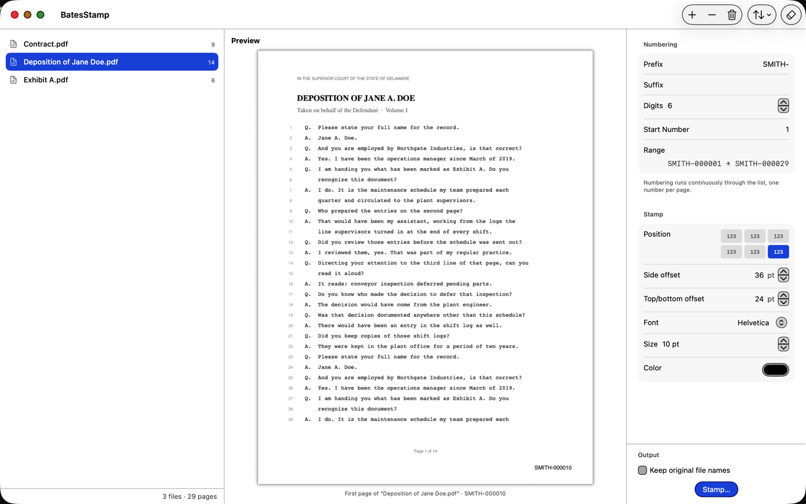
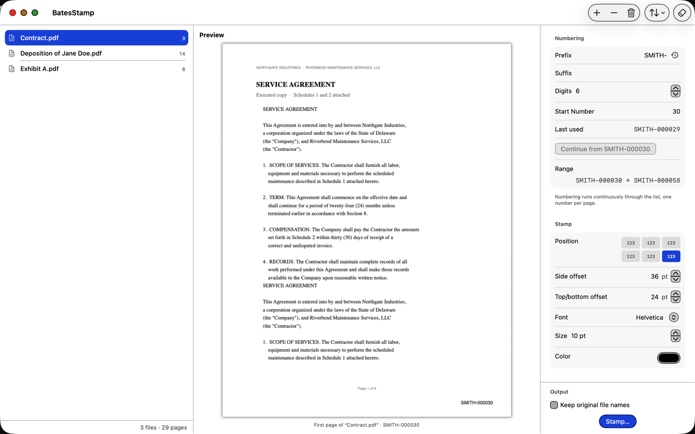
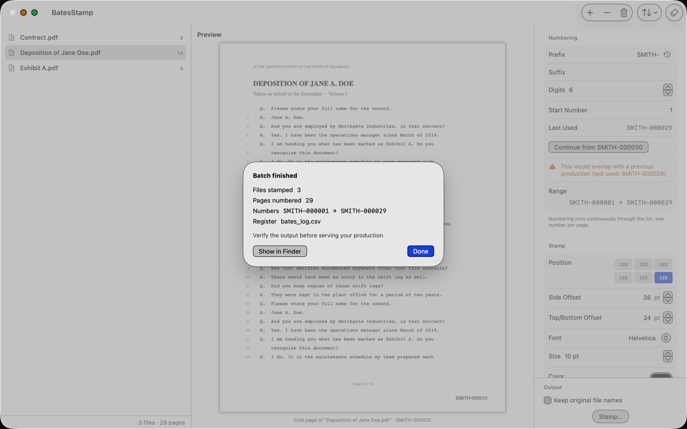
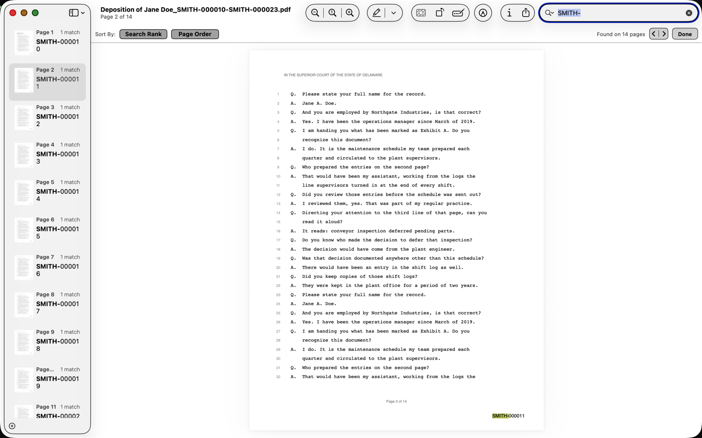

Bates numbering for Mac
Number a production of hundreds of PDFs in one pass. The numbers are real, searchable text. Your originals are never touched, and nothing ever leaves your Mac.
Free during launch — $39.99, one-time, from December 1, 2026
Coming to the Mac App Store




What it does
BatesStamp puts a sequential Bates number on every page of every PDF
in a batch. You set the prefix, the suffix, the number of digits and
the starting number; the numbering then runs continuously through the
list, one number per page, across every file — ACME-000001
on the first page through ACME-004812 on the last.
Drag in files or whole folders, put them in the order the production needs, choose where the copies go, and press Stamp. When the batch finishes, the output folder opens in the Finder with a register of exactly what was produced.
Why this one
The numbers are real text
Each number is written into the page content with a standard PDF font, so it is selectable, printable, and found by Cmd-F in Preview, Acrobat, or anything else. The page is never rasterized.
Fully offline, verifiably
The app is sandboxed and ships without the network entitlement: it cannot make a network request even if it wanted to. No accounts, no analytics, no telemetry.
Originals are never modified
Stamping always writes copies into a folder you choose. The files you dragged in are read and left exactly as they were.
A register you can rely on
Every batch writes bates_log.csv beside the
copies: file names, first and last number, page count, and
the SHA-256 of each file produced. A production can be
verified without opening a single PDF.
Removal gives the original back
The stamp is an incremental update appended to the original bytes. Remove it and the file returns byte-for-byte identical. If somebody else wrote to the file after stamping, removal refuses rather than guess.
Numbering that continues
The app remembers the last number used for each prefix and offers to continue from it. Start below a number you have already produced and it warns you first.
Requirements
- macOS 14 or later
- Apple silicon and Intel.
- No internet connection
- Not to install, not to use, not to license.